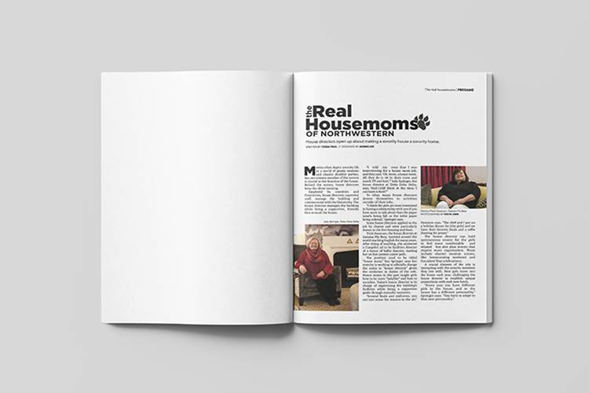
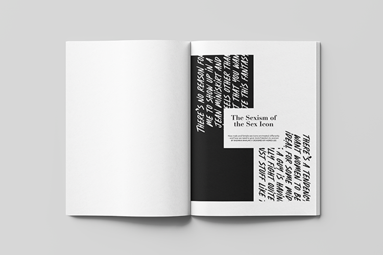
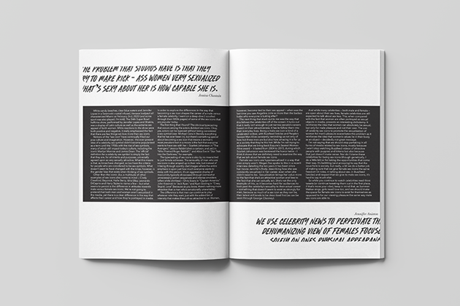
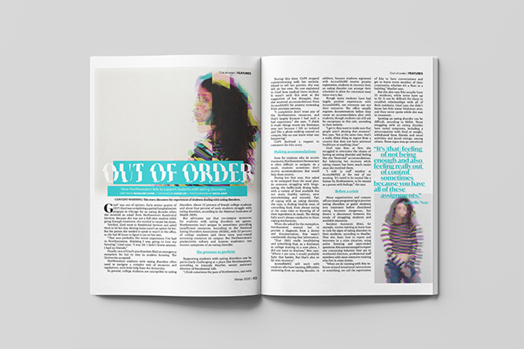
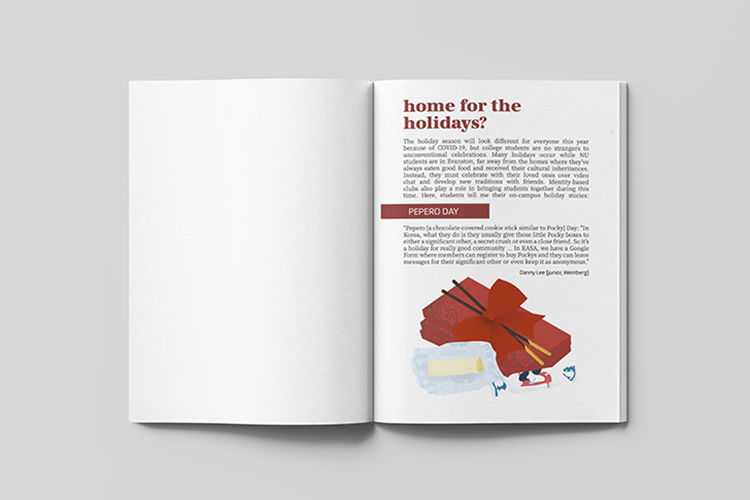
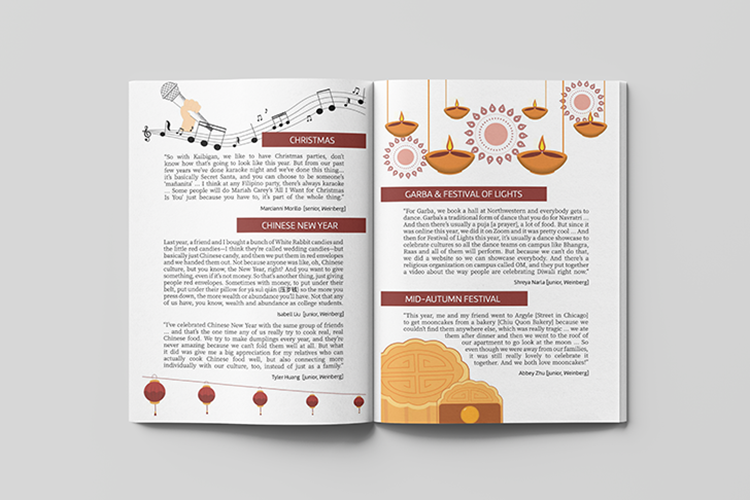

Print Design
With my growing interest in design (and due to the very few design-focused courses on campus), I decided to join on-campus publications
to get more experience in print design. Since joining, I've gotten more confident with drawing illustrations and producing more creative
layouts. I've been a member of the design staff at North by Northwestern as my availability allows by
quarter. The design process for NBN is particularly extensive, as we go through three drafts and spend the last weekend of the
quarter doing final checks – in which the design and copy are checked by at least three editors for three rounds before being
finalized by the Print Managing Editor and Creative Director.
Spreads designed for North by Northwestern
For STITCH and NU Asian, the design process is more autonomous. In addition, the design team does not have as much time with the copy, so there
is often a quick turn-around to complete before publication. However, on STITCH, my co-Design editor and I recently decided to implement the
critique process from other publications like NBN in order to allow for more brainstorming and collaboration within the team while also
advocating for a more lenient publication timeline to better serve our designers.






Spreads designed for STITCH, North by Northwestern and NUAZN